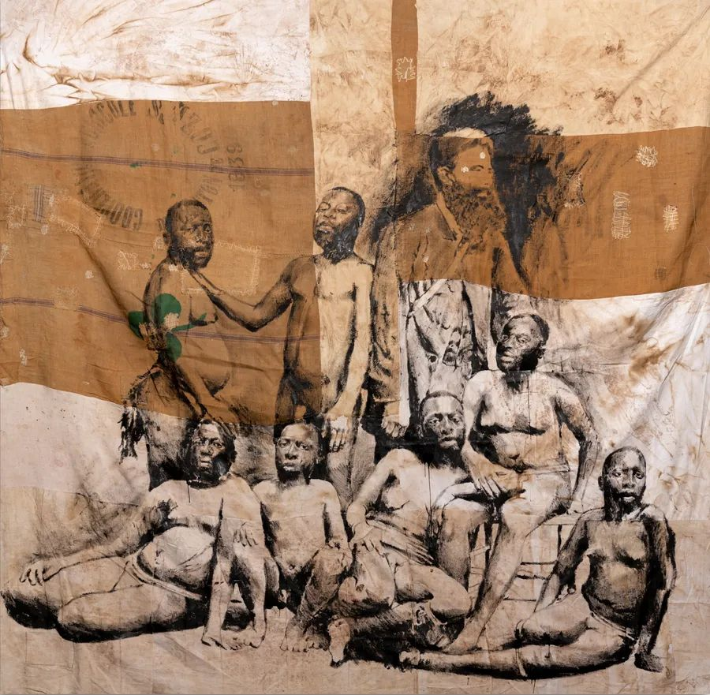

Les œuvres de Roméo Mivekannin créent un théâtre, où le public est invité à rejouer l’histoire à sa manière, à se réapproprier les représentations dont il a pu être l’objet. L’artiste choisit de s’inviter là où ne l’attend pas et de déjouer la place qui lui a été assignée. Il s’introduit comme par effraction dans l’espace de la peinture classique européenne, plastiquement par son autoportrait, symboliquement par le renversement que cette réinterprétation implique, d’un regard subi à un regard choisi.
L’œuvre de Roméo Mivekannin s’illustre par exemple dans son travail de peinture sur toile libre. A l’image d’un rite initiatique, l’artiste plonge les draps qui composeront le fond de ses œuvres dans différents bains de solutions rituelles, des bains d’élixir, et en fait ainsi le lieu de la remise en question d’une iconographie marquée héritée des systèmes de trafic humain et de domination qu’ont été l’esclavage et la colonisation.
Si l’effraction en appelle toujours à la fracture, chaque nouvelle expérience de l’artiste prolonge son geste d’incarner le contre-récit de certains discours de domination, en se saisissant avec ironie et subtilité de l’acte d’auto-représentation. L’artiste réaffirme ainsi le sens subversif qu’il confère à l’acte de réappropriation qui, quand il procède d’une imitation de l’autre, est immanquablement aussi une façon de le révéler en se révélant à soi-même.
Sous des formes plurielles et toujours sensibles, Roméo Mivekannin tente de répondre à la dépossession de sa propre image et de fissurer les rouages d’un pouvoir qui capture l’imagination d’individus ainsi que leurs corps visibles et tangibles.
Expositions à la galerie